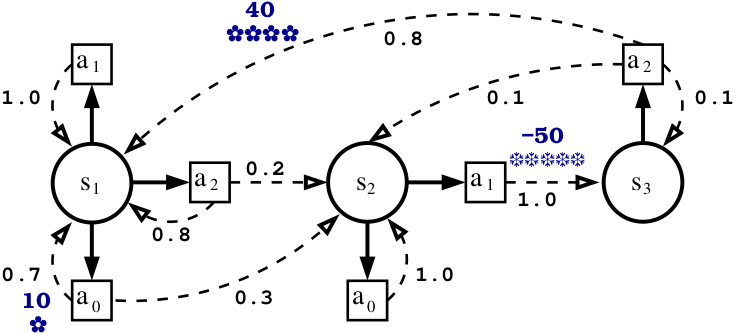

MDP Lesson 2: additional methods
This lesson can be downloaded as a notebook, a notebook for colab and a python file here
Import the modules
[ ]:
// --- Standard C++ utilities used in the notebook ---
// These headers support formatted output and basic containers.
#include <iostream>
#include <string>
#include <vector>
// --- Marmote headers used in this lesson ---
// They provide the C++ counterparts of the Python Marmote objects.
#include <marmoteCore/marmoteDiscreteDistribution.h>
#include <marmoteCore/marmoteFullMatrix.h>
#include <marmoteCore/marmoteInterval.h>
#include <marmoteCore/marmoteSparseMatrix.h>
#include <marmoteMDP/marmoteDiscountedMDP.h>
#include <marmoteMDP/marmoteFeedbackQValueMDP.h>
#include <marmoteMDP/marmoteFeedbackSolutionMDP.h>
#include <marmoteMarkovChain/marmoteMarkovChain.h>
// --- Convenience declarations for the notebook cells below ---
// They simplify the pedagogical examples without changing the model.
using namespace std;
Table of Contents
We want to illustrate the different ways to build the MDP object with the use of different constructors.
Modelling
Description of the model
We use a model with three states s1, s2, s3 and three actions a0, a1, a2. Transitions probabilities and rewards are described by the picture below.

Creating States
[ ]:
// Create the action space shared by all states.
MarmoteSet* actionSpace = new MarmoteInterval(0, 2);
MarmoteSet* stateSpace = new MarmoteInterval(0, 2);
Some modelling choices
Build the MDP with constructor 1
Creating transition matrices
[ ]:
vector<TransitionStructure*> trans(actionSpace->Cardinal());
// Matrix for action a_0.
SparseMatrix* P0 = new SparseMatrix(3);
P0->setEntry(0, 0, 0.7);
P0->setEntry(0, 1, 0.3);
P0->setEntry(1, 1, 1.0);
P0->setEntry(2, 2, 1.0);
trans.at(0) = P0;
// Matrix for action a_1.
SparseMatrix* P1 = new SparseMatrix(3);
P1->setEntry(0, 0, 1.0);
P1->setEntry(1, 2, 1.0);
P1->setEntry(2, 2, 1.0);
trans.at(1) = P1;
// Matrix for action a_2.
SparseMatrix* P2 = new SparseMatrix(3);
P2->setEntry(0, 0, 0.8);
P2->setEntry(0, 1, 0.2);
P2->setEntry(1, 1, 1.0);
P2->setEntry(2, 0, 0.8);
P2->setEntry(2, 1, 0.1);
P2->setEntry(2, 2, 0.1);
trans.at(2) = P2;
Creation of one reward matrix
[ ]:
// Define the penalty used in the reward structures.
double penalty = -100000.0;
FullMatrix* R = new FullMatrix(3, 3);
R->setEntry(0, 0, 7);
R->setEntry(0, 1, 0);
R->setEntry(0, 2, 0);
R->setEntry(1, 0, 0);
R->setEntry(1, 1, -50);
R->setEntry(1, 2, penalty);
R->setEntry(2, 0, penalty);
R->setEntry(2, 1, penalty);
R->setEntry(2, 2, 32);
Build the MDP
Parameters definition
[ ]:
// We avoid the name `beta` here because it is ambiguous in Xeus-cling
// due to the standard function std::beta.
double discountFactor = 0.95;
string criterion = "max";
We now build a first discounted MDP with the constructor that takes one reward matrix defined on couples (state, action).
[ ]:
// The Python notebook contains a small variable-name inconsistency here.
// In C++, we use the transition vector actually built in this section.
DiscountedMDP* first_mdp = new DiscountedMDP(criterion, stateSpace, actionSpace, trans, R, discountFactor);
first_mdp->Write();
Build the MDP with constructor 2
Creating transition matrices
[ ]:
// Allocate the transition matrices for the second constructor.
vector<TransitionStructure*> transb(actionSpace->Cardinal());
SparseMatrix* P0b = new SparseMatrix(3);
P0b->setEntry(0, 0, 0.7);
P0b->setEntry(0, 1, 0.3);
P0b->setEntry(1, 1, 1.0);
P0b->setEntry(2, 2, 1.0);
transb.at(0) = P0b;
SparseMatrix* P1b = new SparseMatrix(3);
P1b->setEntry(0, 0, 1.0);
P1b->setEntry(1, 2, 1.0);
P1b->setEntry(2, 2, 1.0);
transb.at(1) = P1b;
SparseMatrix* P2b = new SparseMatrix(3);
P2b->setEntry(0, 0, 0.8);
P2b->setEntry(0, 1, 0.2);
P2b->setEntry(1, 1, 1.0);
P2b->setEntry(2, 0, 0.8);
P2b->setEntry(2, 1, 0.1);
P2b->setEntry(2, 2, 0.1);
transb.at(2) = P2b;
Creation of several reward matrices
Since the reward values depend on the transition, we use a second constructor which takes two vectors of matrices: one for transition matrices and one for transition-dependent rewards.
[ ]:
// Create the reward matrices associated with each action.
SparseMatrix* R1 = new SparseMatrix(3);
SparseMatrix* R2 = new SparseMatrix(3);
SparseMatrix* R3 = new SparseMatrix(3);
R1->setEntry(0, 0, 10);
R1->setEntry(2, 2, penalty);
R2->setEntry(1, 2, -50);
R2->setEntry(2, 2, penalty);
R3->setEntry(1, 1, penalty);
R3->setEntry(2, 0, 40);
vector<TransitionStructure*> rews(actionSpace->Cardinal());
rews.at(0) = R1;
rews.at(1) = R2;
rews.at(2) = R3;
Let us check the matrices.
[ ]:
// Display the three reward matrices to check their entries.
cout << "Checking R1" << endl;
R1->Write(&cout);
cout << endl << "Checking R2" << endl;
R2->Write(&cout);
cout << endl << "Checking R3" << endl;
R3->Write(&cout);
Build the MDP
[ ]:
// Build the discounted MDP with transition-dependent rewards.
DiscountedMDP* second_mdp = new DiscountedMDP(criterion, stateSpace, actionSpace, transb, rews, discountFactor);
second_mdp->Write();
Solve the MDP
Giving values to the parameters for the solving algorithms.
[ ]:
// Set the numerical precision and the iteration budget for the solver.
double epsilon = 0.00001;
int maxIter = 150;
[ ]:
// Solve the model with value iteration.
FeedbackSolutionMDP* optimum2 = second_mdp->ValueIteration(epsilon, maxIter);
optimum2->Write();
Additional features
(Markov Chain and Q-Value)
We present now some additional features related to the Q-value and the Markov chain associated with a policy.
Creation of the Markov chain associated with a policy
The transition matrix associated with a policy can be retrieved using the GetChain method, which returns a SparseMatrix constructed from the policy given as a parameter.
[ ]:
// Extract the Markov chain induced by the optimal policy.
SparseMatrix* Mat = second_mdp->GetChain(optimum2);
Mat->set_type(DISCRETE);
Mat->Write(&cout);
Now we create the Markov chain. In Python, numpy arrays are used for the initial probabilities. In C++, we use a plain array of doubles and pass it to the DiscreteDistribution constructor.
[ ]:
// Define an initial distribution for the induced Markov chain.
double initial_prob[3] = {0.333, 0.333, 0.334};
DiscreteDistribution* initial = new DiscreteDistribution(stateSpace, initial_prob);
MarkovChain* chain = new MarkovChain(Mat);
chain->set_init_distribution(initial);
chain->set_model_name("Chain issued from the MDP");
chain->Write(&cout);
Creation of the Q Value associated with a policy (for R.L. purpose)
It is also possible to create a FeedbackQValueMDP in a DiscountedMDP. A FeedbackQValueMDP stores a Q-value for any couple (s,a). From that, it is possible to draw actions according to the EpsilonGreedy or SoftMax rules.
Create the FeedbackQValueMDP object.
[ ]:
// Build the Q-value object associated with the optimal policy.
FeedbackQValueMDP* F = second_mdp->GetQValue(optimum2);
F->Write();
For drawing actions, we reset the random generator.
[ ]:
// Reset the random seed before sampling actions from the Q-value policy.
F->ResetSeed();
We draw an action with the EpsilonGreedy principle in state 0 with epsilon = 0.1 for a maximisation criterion.
[ ]:
// Sample an action with an epsilon-greedy rule.
int action = F->EpsilonGreedyMax(0, 0.1);
cout << action << endl;
We draw an action with the SoftMax principle in state 2.
[ ]:
// Sample an action with the softmax rule.
action = F->SoftMax(2);
cout << action << endl;
End of the notebook
[ ]:
// Release the dynamically allocated objects used in this notebook.
delete F;
delete chain;
delete initial;
delete optimum2;
delete first_mdp;
delete second_mdp;
delete stateSpace;
delete actionSpace;